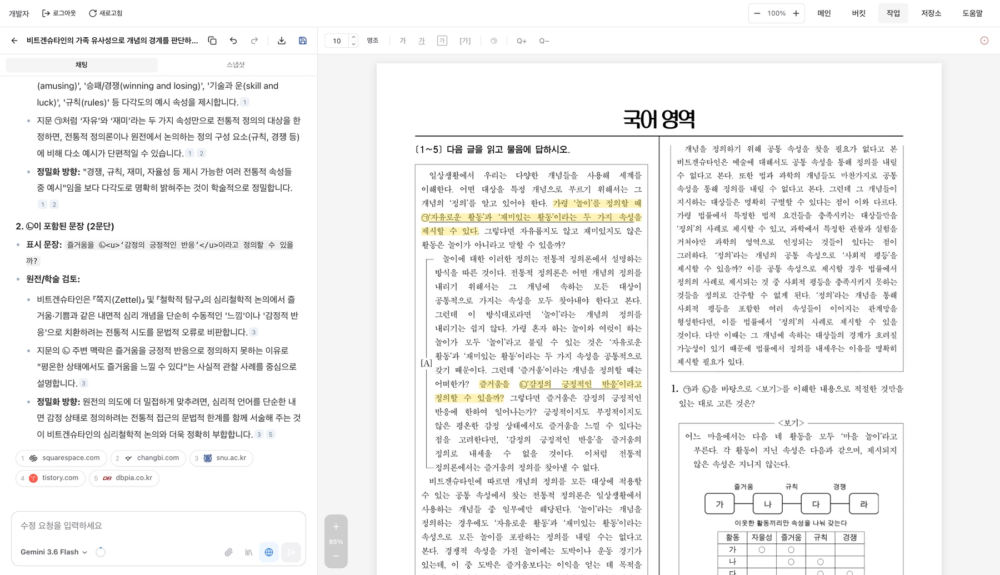
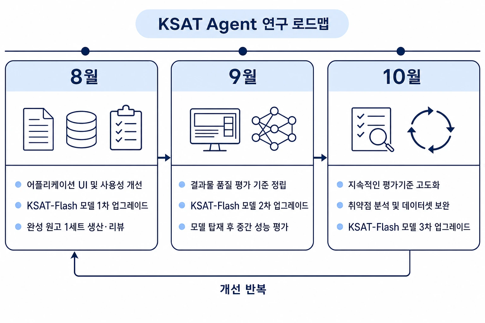
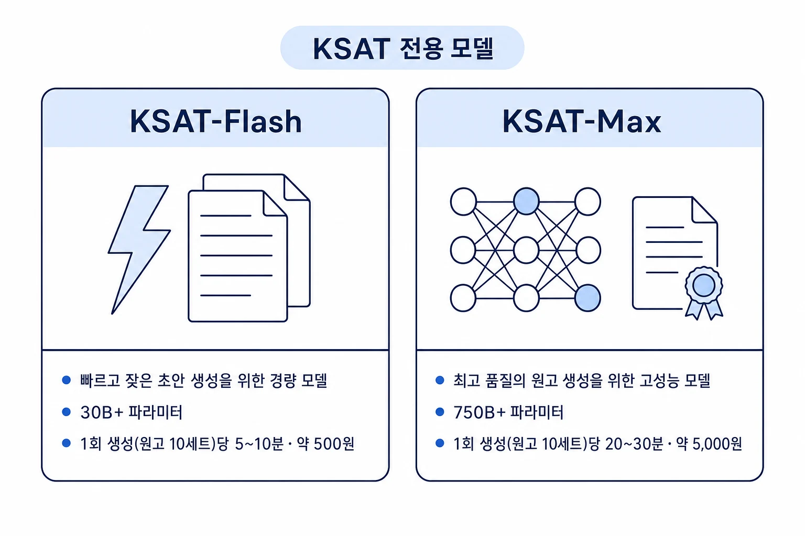

KSAT Agent
AI 기반 수능국어 독서 영역 출제 도구
Application · 2026-08-05 · 권준희 · 이어진 · 하성표
수능 국어 독서 문항 세트는 소재 선정·자료 수집·지문 작성·문항 출제에 이르기까지 긴 과정을 거쳐 만들어집니다. KSAT Agent는 이 과정을 단축하고 문항 세트 초안을 효과적으로 생산하기 위해 만들어진 AI 도구입니다.

KSAT Agent 사용 화면
이 글에서는 국어 출제 전문가와 엔지니어의 지속적인 협업을 바탕으로, KSAT Agent를 고도화시키기 위한 연구·개발 과정 및 일정을 다룹니다.

8월 1주차
1. 사용 테스트 및 환경 정비
08-07
| 번호 | 내용 | 조치여부 |
|---|
| 1 | - 어시스턴트 입력창에 파일·기출 첨부
- 버튼으로 hwp·hwpx·pdf의 쪽 범위와 이미지를 담고, 버튼으로 기출을 고름
- 그림은 붙여넣거나 끌어다 놓아도 바로 담김
| 완료 |
| 2 | - 편집 화면에서 글자를 칠 때 화면이 따라오는 속도가 느림
- 타이핑 반응 속도 개선
| 완료 |
| 3 | - 대화가 많이 쌓인 작업에서 새로고침하면 최근 대화가 보이지 않고 예전 대화가 마지막에 표시됨
- 대화를 오래된 것부터 읽어 끊기던 것을 최근 것부터 읽도록 수정
| 완료 |
| 4 | - 그림의 한 부분만 고쳐 달라고 해도 그림 전체가 다시 그려짐
- 어시스턴트가 그림 전체를 보고, 그린 결과를 확인하며 고치도록 수정
| 완료 |
| 5 | - 삽화를 만들 때 첨부한 그림의 배치와 시점을 따라 그리기
| 완료 |
| 6 | - 대화가 길어져도 이전 내용이 요약되지 않고, 요약되면 진행 중이던 맥락까지 사라짐
- 요약 시점을 앞당기고, 최근 대화와 사용자가 정한 문체·용어·출제 기준은 쓴 문장 그대로 남김
| 완료 |
| 7 | - 어시스턴트 사용 비용 절감
- 매 요청에 되풀이되어 실리는 부분을 다시 계산하지 않도록 수정
| 완료 |
| 8 | - 고를 수 있는 어시스턴트 모델을 6종으로 확대하고 목록에 지능 지수를 함께 표시
- GPT-5.6 Sol, Gemini 3.1 Pro, Claude Sonnet 5 추가
| 완료 |
| 9 | - 어시스턴트의 기본 지침을 좋은 예와 나쁜 예를 붙여 다시 작성
- 압축형 서술, 정도를 잴 수 없는 표현 배제, 문단을 개념어로 잇기, 선지 구성 기준
| 완료 |
08-06
| 번호 | 내용 | 조치여부 |
|---|
| 1 | - 파일 올리기와 직접 입력으로 나뉘어 있던 소재 추출 화면을 하나로
- 왼쪽에서 버킷 이름·분야·지문 유형·개수·모델을 정하고 오른쪽에서 프롬프트 작성
| 완료 |
| 2 | - 소재를 뽑을 때 쓸 기출을 골라 함께 넣기
- 시행 년도·월·출처로 목록을 좁히고 조판 결과로 미리 보기
| 완료 |
| 3 | - 소재를 만들 모델을 고르고, 모델마다 하루 생성 횟수와 한 번에 만들 개수를 표로 확인
| 완료 |
| 4 | - 문항마다 모티브로 삼을 기출을 한 세트씩 붙이기
| 완료 |
| 5 | - 이미 있는 지문·문항 파일을 올려 작업으로 바로 등록
- hwp·hwpx·pdf에서 읽은 지문 세트를 골라 편집 화면으로
| 완료 |
| 6 | - 어시스턴트가 인터넷을 검색해 사실을 확인하는 도구
- 입력창의 버튼으로 켜고 끄며, 켜면 기억 대신 검색한 내용으로 답함
| 완료 |
| 7 | - 검색해서 답할 때 어느 자료에서 온 내용인지 표시
- 문장 끝에 번호를 달고 답변 아래에 사이트 아이콘과 주소를 배지로 나열
| 완료 |
| 8 | - 어시스턴트가 답하기 전에 무엇을 살피는지 보여 주기
- 답변 위에 걸린 시간과 함께 표시되고, 화살표를 누르면 생각이 펼쳐짐
| 완료 |
| 9 | - 인터넷 검색을 켜도 검색하지 않고 기억으로 답하던 문제
- 사실 확인을 요청하면 답을 쓰기 전에 검색하도록 수정
| 완료 |
| 10 | - 남긴 스냅샷을 목록에서 고르면 그 시점의 지문·문항이 편집 화면에 그대로 표시
- 다시 누르거나 채팅으로 옮기면 최근 편집본으로 복귀
| 완료 |
| 11 | - 편집 화면을 스냅샷 시점으로 되돌리는 불러오기
- 되돌린 시점 이후의 스냅샷은 함께 삭제되며, 실행 전에 확인창으로 안내
| 완료 |
| 12 | - 평가원 기출의 서술 방식을 어시스턴트의 기준으로 반영
- 압축형 서술, 개념어 정의, 문단 사이를 개념어로 잇기, 새 용어 만들지 않기
| 완료 |
08-05
| 번호 | 내용 | 조치여부 |
|---|
| 1 | - 소재 추출이 끝나지 않고 계속 진행 중으로 남음
- 20분 넘게 아무 기록이 없으면 중단으로 표시하도록 수정
| 완료 |
| 2 | - 배포하면 진행 중이던 소재 추출이 사라짐
- 작업을 Cloud Tasks 큐로 옮겨 카드 한 장 단위로 다시 배달
| 완료 |
| 3 | - 그림을 고쳐도 작업 화면에는 이전 그림이 보임
- HWPX로 내려받은 파일에는 고친 그림이 들어 있음
| 완료 |
| 4 | - 어시스턴트가 요청을 삼키고 아무 말 없이 끝남
| 완료 |
| 5 | - 어시스턴트가 무엇을 어떻게 고쳤는지 알려 주지 않음
| 완료 |
| 6 | - 저장소 세트의 제목을 바꾸는 기능
- 비슷한 소재로 여러 지문을 뽑으면 제목이 겹쳐 구분되지 않음
| 완료 |
| 7 | - 지금 상태를 HWPX로 저장소에 남기고 메모를 붙이는 스냅샷 기능
- 편집 화면에서 문장을 끌면 몇 문단 몇 줄인지와 함께 메모에 인용
| 완료 |
| 8 | | 완료 |
| 9 | - 문항 설정에 요청사항을 문장으로 적는 칸 추가
| 완료 |
| 10 | - PDF를 두 개 이상 고를 수 있게
- 파일마다 페이지 구간을 골라 담고, 한글 문서와 이미지도 같은 창에서 첨부
| 완료 |
| 11 | - 컨텍스트 캐싱이 OpenAI·Anthropic·Gemini 세 곳에 걸려 있는지 확인
- 대시보드 단가가 캐시로 읽은 토큰을 반영하는지 확인
| 완료 |
| 12 | - ksat-pro, ksat-flash 모델의 서빙 단가 정책을 반영한다
| 완료 |
| 13 | - 소재 카드와 지문 윤문에서 모델의 생각 토큰이 사용량에 빠짐
| 완료 |
08-04
| 번호 | 내용 | 조치여부 |
|---|
| 1 | - 문항 수 상한을 5개에서 더 늘리기
- 2022개정 예시 문항에 6문항짜리 세트가 있음
| 완료 |
| 2 | - 문항의
[2점] 배점 표기를 처음 설정에서 켜고 끄기
| 예정 |
| 3 | | 완료 |
| 4 | - 복합 지문과 장문 독서 지원
- 문단 수·줄 수 조건을 받아 반영
| 예정 |
8월 2주차
1. KSAT 전용 모델 1차 학습 완료

모델 정보
| 모델 |
크기 |
가동 준비 시간 |
1회 생성 (원고 10세트) |
용도 |
| 소요 시간 |
비용 |
| KSAT-Flash |
30B+ |
약 4~8분 |
약 2분 |
약 500원 |
빠르고 잦은 초안 생성 |
| KSAT-Max |
750B+ |
약 15~20분 |
약 5분 |
약 3,000원 |
최고 품질의 원고 생성 |
학습 방법
- 지도학습, 선호도 학습, 강화학습(CRPO) 등
- NVIDIA B200 4~12대 GPU 클러스터, 약 100시간 학습
- Pipeline 추출 기반 학습 데이터셋
관련 연구글
결과물 및 성능 평가
8월 3주차
결과물 샘플
- KSAT-Max-08-16 기준 결과물
- 텍스트 복사/붙여넣기가 아닌, hwpx파일 직접 생성
- 어떠한 편집이나 조작을 거치지 않은 원본입니다.
품질 평가
1차 품질 평가
1. 요약

- 전문가 개요를 반영해 재생성하면 문단 간 연결과 표현이 개선됐습니다.
- 모든 수치는 정량 측정값이 아닌 내부 검토 결과입니다.
2. 전문가 검토의견